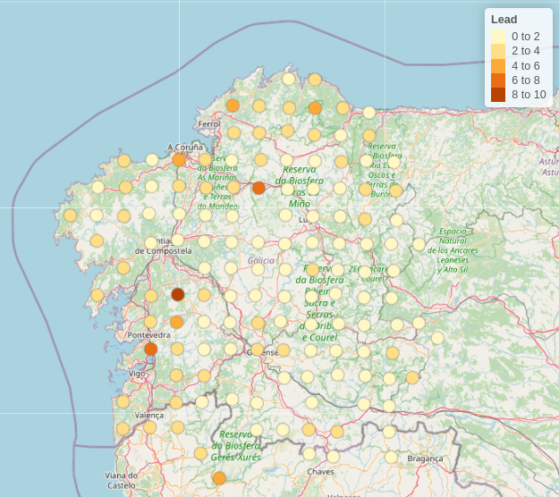
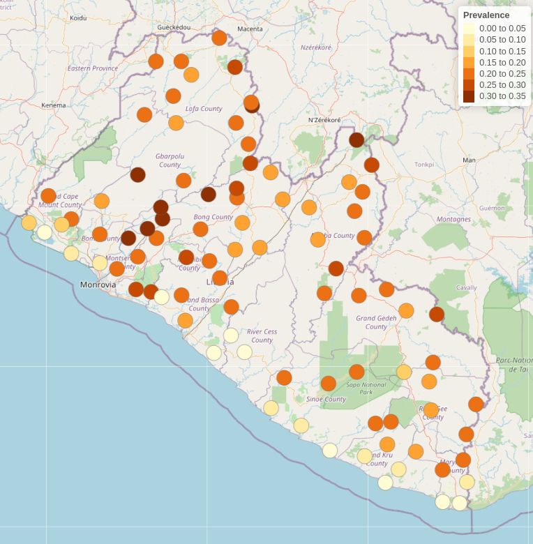
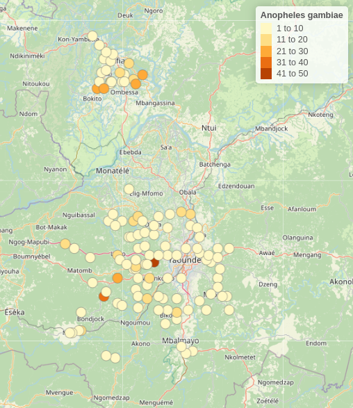

install.packages("RiskMap")1 Introduction
The book provides shows how to carry out model-based geostatistical analysis of public health data using the RiskMap R package. In this introductory chapter, we explain what are the pre-requisites for using this book and its learning objectives. We also explain what software should be installed and how. Finally, we give a brief overview of the class of models covered in this book, and the examples that will be used to illustrate the methods and use of software.
1.1 Objectives of this book
The overall aim of this book is to provide you with the skills to perform a geostatistical analysis of a data-set using the R software environment. As you work your way through the book, you will learn to:
- explore geostatistical data-sets using graphical procedures and summary statistics;
- formulate and fit geostatistical models using the maximum likelihood estimation method;
- carry out prediction of health outcomes at different spatial scales;
- visualize and interpret the results from geostatistical models;
- model the relationships between spatially referenced risk factors and the health outcome of interest;
- validate the assumptions of geostatistical models and assess their predictive performance.
Although the focus of this book is on public health, the statistical ideas, as well as the software used, can also be applied for the analysis of geostatistical data-sets arising from other scientific fields.
1.2 Pre-requisites for using this book
To effectively understand and use the material presented in this book, it is expected that you should possess prior knowledge of basic probability theory, foundational topics in statistical modelling and R programming. Below we provide a more detailed explanation of the pre-requisites for each of these three fields.
1.2.1 Topics in probability
Basics probability theory is important to fully understand the content of this book. In particular, you should have knowledge of: the general definition and properties of continuous and discrete distribution; how the describe the properties of probability distributions through their mean, variance and skeweness; the concepts of stochastic dependence and correaltion; the distinction between marginal and conditional distributions; the basic properties of the Gaussian, Binomial and Poisson distributions; the definition and properties of the multivariate Gaussian distribution. The redear can find an extensive explanation and illustrations with examples of all these topics in Ross (2013).
1.2.2 Topics in statistics
Likelihood-based inference (whether frequensist or Bayesian) provides the theoretical bedrock for the estimation of almost any statistical model. In this book will focus on maximum likelihood estimation methods of inference. Extensive use of the notions of point and interval estimates obtained using the maximum likelihood estimation methods will be made through the book. Recommended readings include chapters 1, 2 and 4 of Pawitan (2001).
Good knowledge of Generalized linear models (GLMs) is essential, as the geostatistical modelling framework builds on these as an extension. Before embarking on the use of this book, we thus encourage you to review the basic theory of GLMs and, in particular, how these are applied and interpreted. In this book, we will cover examples that will model continuously measured outcomes and counts. Hence, good understanding of linear regression modelling and modelling of counts data using Binomial and Poisson regression should be the main focus of the review. For comprehensive overview of GLMs and their implementation in R, we refer you to Dobson and Barnett (2008).
1.2.3 Topics in R programming
Although this book does not require to possess advanced skills in R programming, it is important you have good knowledge in the following topics: creation and manipulation of vectors and matrices; logical vectors; character vectors; handling of lists and data frame objects; reading data into R; graphical procedures. A very large amount of freely available material covering these topics can be found online. Our recommendation is to start from the manual “An introduction to R” of the Comprehensive R Archive Network available at this link, available at R manual.
1.3 Obtaining and running the R packages
It is advised that you obtain the latest 64-bit version of R in order to run the R code of this book. To install R, go to the R website, where you can download the installer packages for Windows and Mac, and find instructions for Linux, using binary files.
The list of the R packages used in this book is provided in the Table 1.1.
Table 1.1: List of the R packages that will be used in the book with a description of their use in the data analysis.
| R package | Used for |
|---|---|
RiskMap |
Estimating of geostatistical models and spatial prediction |
sf |
Handling of spatial data in R |
raster |
Handling of raster files in R |
ggplot2 |
Creating maps and exploratory plots |
crsuggest |
Guessing a coordinate reference systems when unknown |
To install packages in R for the first time, you can use the command install.packages in the R console, as shown below for the RiskMap package.
1.4 Example data-sets used in the book
The geostatistical data-sets described in this section will be used throughout the book to illustrate the use of the R packages mentioned in the previous sections.
Each of the three data-sets can be loaded from the RiskMap package, using the command
data(galicia)for the lead concentration data from Galicia,
data(liberia)for the river-blindness data-set, and
data(anopheles)for the Anhopheles mosquitoes data-set.
In the final chapter of this book, we will consider the analysis of additional data-sets to review the main statistical concepts presented in this book.
1.4.1 Lead concentration in Galicia

Lead is a heavy metal which, in high concentrations, can cause chronic damage to living organisms over a long period of time. For this reason its spread and source must be regularly monitored. To assess the extent of the contamination in an area, measurements of lead are often taken from plants. The data here considered (Figure 1.1) consist of 132 locations of moss samples collected in 2000, in and around Galicia, a region in the North-Western part of Spain. One of the objectives of this survey was to establish the spatial pattern of lead concentration in Galicia so as to better identify possible sources of contamination; fore more information, see Fernández, Rey, and Carballeira (2000).
In this case, geostatistical modelling can be used to predict the lead concentration across Galicia and allows to disentangle variation which is purely random, possibly due to measurement error, and genuine spatial variation, which is our main object of interest.
This data-set will be used in this book to show how to carry out the spatial analysis of continuously measured variables using linear geostatistical models.
1.4.2 River-blindness in Liberia

In low-resource settings, where disease registries are typically absent, cross-sectional surveys are an essential monitoring tool that enables the estimation of the disease burden in a population of interest. The data considered in this example have been collected as part of an Africa-wide initiative called the Rapid Epidemiological Mapping of Onchocerchiasis (REMO) carried out in 2011 in 20 African countries (Zouré et al. 2014). The goal of REMO is to identify areas where river-blindness (or onchocerchiasis), a disease transmitted by black flies who breed along fast flowing rivers, is still a public health problem. In this context, it is especially of interest to identify communities with a prevalence above 20% and for treatment is urgently needed.
In this book, we will use data collected from Liberia to model nodule prevalence, which is based on a alternative and cheaper diagnostic technique for river-blindness. In the analysis of this data-set, we will illustrate how to formulate and fit Binomial geostatistical models, and how these can be used to predict prevalence within a region of interest.
1.4.3 Anopheles gambiae mosquitoes in Southern Cameroon

In studies of vector-borne and zoonotic diseases, understanding of the vector distribution can help to better guide the decision-making process for the implementation, monitoring and evaluation of control programmes. Anopheles gambiae mosquitoes are one of the main vectors for malaria transmission in sub-Saharan Africa. Their distribution over space is affected by several environmental and climatic factors, including temperature, humidity and vegetation.
The data-set considered in this example is a sub-set taken from a large database (Tene Fossog et al. 2015) that was assembled to understand how the environment affects the distribution of different species of Anopheles mosquitoes in sub-Saharan Africa. We will use this data-set as an example in this book to illustrate application of Poisson geostatistical models for mapping mosquitoes abundance.
1.5 Geostatistical problems and geostatistical models
What the examples of the previous section have in common is that, in each case, the goal of statistical analysis is to draw inferences on an unobserved spatially continuous surface using data collected from a finite set of locations. The lead concentration in Galicia, the prevalence for river-blindness in Liberia and the abundance of A. gambiae mosquitoes in Cameroon can all be represented as spatially continuous processes that originate from the combined effects of environmental factors. We denote this class of inferential problems as geostatistical problems for which a solution can be found through the development and application of suitable geostatistical models, which are the subject of this book.
As one can soon realize, geostatistical problems are not unique to global health but arise in many other fields of science, including economics, physics, biology, geology and others. It thus comes to no surprise that geostatistics was initially developed in the South African mining industry in the 1950s (Krige 1951). This was then further developed as a self-contained discipline by Georges Matheron and other researchers at Fontainebleau, in France (Matheron 1963; Chilès and Delfiner 2016). In Watson (1971) and Watson (1972) a first connection is drawn between geostatistics and the prediction of stochastic processes. However, it is only with Ripley (1981) and then Cressie (1991) that geostatistics is explicitly brought into a classical statistical framework for the analysis of spatially referenced data. Diggle, Tawn, and Moyeed (1998) coined the term model-based geostastics and introduced this as belonging to the general class of generalized linear mixed models (Breslow and Clayton 1993), while emphasizing the use of likelihood-based methods of inference. As in Diggle, Tawn, and Moyeed (1998), also in this book, we advocate the application of model-based geostistical models as a class of parametric statistical models on which inference can be carried out using either maximum likelihood estimation or Bayesian methods.
More precisely, our attention will be directed at the class of generalized linear geostatistical models, or GLGM. To formally specify this, we first define the random variables \(S\), a spatial stochastic process, and the random variable \(Y= (Y_1, \ldots, Y_n)\) which correspond to the outcome observed at a set of locations \(X = (x_1, \ldots, x_n)\). Let us use \([A]\) to denote “the distribution of the random variable \(A\)”. To formulate a GLGM, we should then specify the joint distribution of \(S\) and \(Y\), which we write as \[\begin{equation} \label{eq:glgm_joint_ch1} [Y, S] = [S] [Y | S]. \end{equation}\] On the right-hand side of the equation above, we have factorized the joint distribution of \(Y\) and \(S\), as the product between the marginal distribution of \(S\) and the conditional distribution of \(Y\) given \(S\). Hence, the formulation of a GLGM can be break down into the tasks of formulating \([S]\) and \([Y | S]\).
In defining \([S]\), throughout the book, we shall assume that this is a zero-mean stationary and isotropic Gaussian process. In other words, these assumptions impose that the joint distribution of \(S(X) = (S(x_1),\ldots,S(x_n))\), i.e. the process \(S\) at the sampled locations \(x_1, \ldots, x_n\), is invariant with respect to rations and translations of the locations \(X\). In practical terms, the main implication of this is that, for any pair of locations \(x_i\) and \(x_j\) the correlation function \(\rho(\cdot)\) between \(S(x_i)\) and \(S(x_j)\) is purely a function of the Euclidean distance, \(u_{ij}\), between \(x_i\) and \(x_j\), i.e. \[\begin{equation} \label{eq:correlation_ch1} {\rm cov}\{S(x_i), S(x_j)\} = \sigma^2\rho(u_{ij}), \end{equation}\] where \(\sigma^2\) is the variance of \(S(x)\) for all \(x\). In Chapter 3, we will look more closely at what type of correlation functions can be used for \(\rho(\cdot)\) and how these affect our predictive inferences. Furthermore, the fact that assume the process \(S\) to have mean zero is because this is process acts as a residual term in our modelling of \(Y\). This aspect will be reiterated several times in the following chapters, as it as important implications for the interpretation of the other components of a geostatistical model, as well understanding the results of the analysis.
Finally, we model \([Y | S]\), i.e. the distribution of \(Y\) given \(S\), is modeled as a set of mutually independent distributions which belong the exponential family, as defined in classical generalized linear modelling framework (Nelder and Wedderburn 1972). It then follows that, we can write \([Y | S]\) as \[\begin{equation} \label{eq:glm_ch1} [Y | S] = \prod_{i=1}^n [Y_i | S(x_i)]. \end{equation}\] The final step then consists of specifying a distribution for \([Y_i | S(x_i)]\). Table 1.2 gives the range, mean and variance the three specifications for \([Y_i | S(x_i)]\) which we will consider in this book. In the table, the canonical function, say \(g(\cdot)\), denotes the natural transformation of the mean component \(\mu_i\) that allows us to introduce both covariates and the spatial process \(S(x_i)\) into the model so as to explain the variation in \(\mu_i\) as \[\begin{equation} \label{eq:linear_predictor_ch1} g(\mu_i) = d(x_i)^\top \beta + S(x_i). \end{equation}\] where \(d(x_i)\) is a vector of spatially referenced covariates with associated regression coefficients \(\beta\). Finally, the quantity \(m_i\), which appears in the formulation of the Binomial and Poisson distributions, is an offset quantity and is used to account for the number of tests or the population size at a given location \(x_i\).
Table 1.2: List of type of outcomes \(Y_i\) considered in the book.
| Distribution | Range of \(Y_i\) | Mean of \([Y_i | S(x_i)]\) | Variance of \([Y_i | S(x_i)]\) | Canonical link |
|---|---|---|---|---|
| Gaussian | \((-\infty, +\infty)\) | \(\mu_i\) | \(\tau^2\) | \(g(\mu_i) = \mu_i\) |
| Binomial | \(1,\dots,m_i\) | \(m_i\mu_i\) | \(m_i\mu_i(1-\mu_i)\) | \(g(\mu_i) = \log\{ \mu_i/(1-\mu_i) \}\) |
| Poisson | \(1,2,\ldots,\infty\) | \(m_i\mu_i\) | \(m_i\mu_i\) | \(g(\mu_i) = \log\{ \mu_i \}\) |
Based on the formulation in \(\eqref{eq:linear_predictor_ch1}\), we can see that \(S(x_i)\) quantifies residual spatial effects on \(\mu_i\) that have not been accounted for by the covariates \(d(x_i)\). In an ideal scenario, the covariates \(d(x_i)\) should explain all the spatial variation without the need for \(S(x_i)\). Although this unrealistic, in practice we may be able to most of the variation in \(\mu_i\) through \(d(x_i)\) and, hence, reduce \(S(x_i)\) to a negligible component. In Chapter 2, we will show how a thorough exploratory analysis can help to understand whether we have come close to that ideal scenario or, if instead, we need the use of GLGM to model the data.
The model described in \(\eqref{eq:linear_predictor_ch1}\) can be seen as the most basic GLGM that can be used for a geostatistical analysis. As we will see in the analysis of some of the examples and, in Chapter 6, in the case studies, some extensions of this model will be required to account for additional sources of residual variation that contribute to the intrinsic random variation of the data.